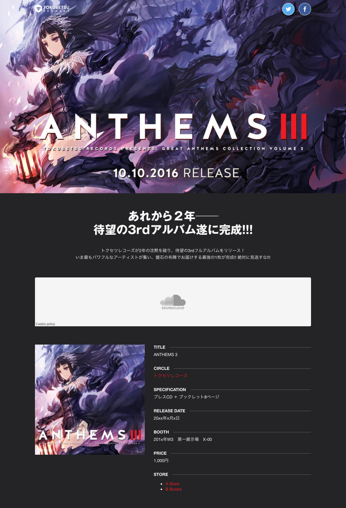

告知サイトが一瞬で完成
Tokusetsu 3 は、最速で告知サイト（特設サイト）を作る方法です。用意するのは、幾つかの画像だけ。あとはフォームに必要な情報を入力していけば、あっという間に同人告知サイトが作れます。
さらに柔軟になった編集項目
コーディング不要の簡単さはそのままに、カスタマイズ項目を大幅に増やしました。より柔軟なページ制作を可能にします。
ダークモードに切り替え
ページ全体のカラーを「ライトモード」「ダークモード」の2種類から選べます。加えて、アクセントカラーに自由な色を指定できるようにしました。いっそう自分らしいページが作れます。
デモページイラスト提供: 魔界の住民さん
